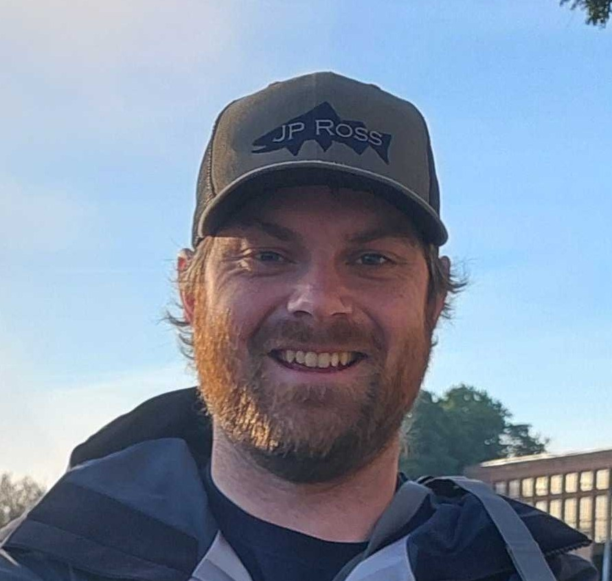
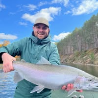
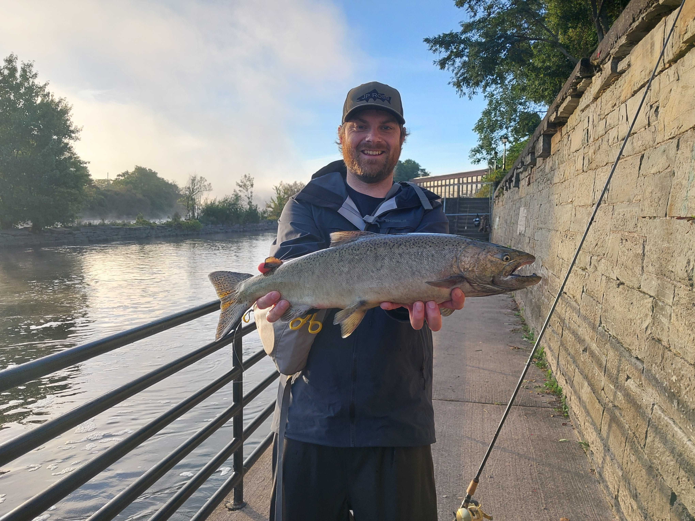

Vinnie’s research interests include evolution, ecology, native species restoration, and fisheries management. He grew up vacationing in northern Michigan where he developed an interest in the Great Lakes and freshwater fisheries. His first molecular experience came as an undergraduate, running PCR and scoring microsatellites to aid in a native walleye restoration in Eric Hallerman’s Conservation Genetics Lab at Virginia Tech. He spent 2 years as a field technician with the West Virginia Division of Natural Resources, which led him to an M.S. program at West Virginia University. For his thesis, he studied the population dynamics of Blue and Flathead Catfish on the Ohio River, under his advisor Stuart Welsh. After earning his M.S., his interests in evolution and the Great Lakes drew him back to conservation genetics, where he spent two years contributing to coregonine restoration efforts under Amanda Ackiss at the USGS Great Lakes Science Center in Ann Arbor, MI. Here, he learned the high throughput, NGS- driven methods which are a cornerstone of his current work in the SOAC lab. Vinnie is currently involved in all the molecular research areas of the SOAC lab, ensuring best lab practices, and coordinating the day-to-day logistics of lab work with his fellow researchers and students. In his free time, Vinnie enjoys playing music and fly fishing Central New York and northern Michigan.

